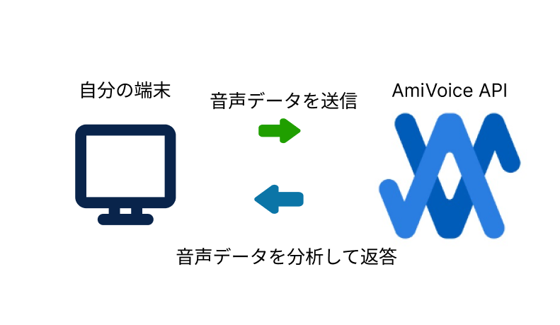
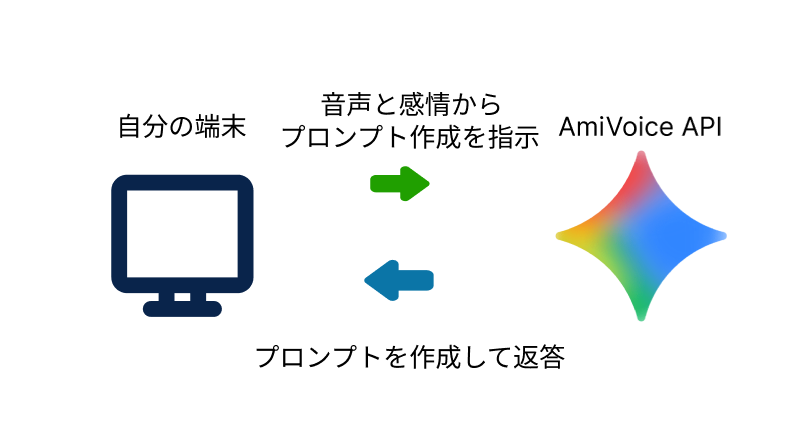
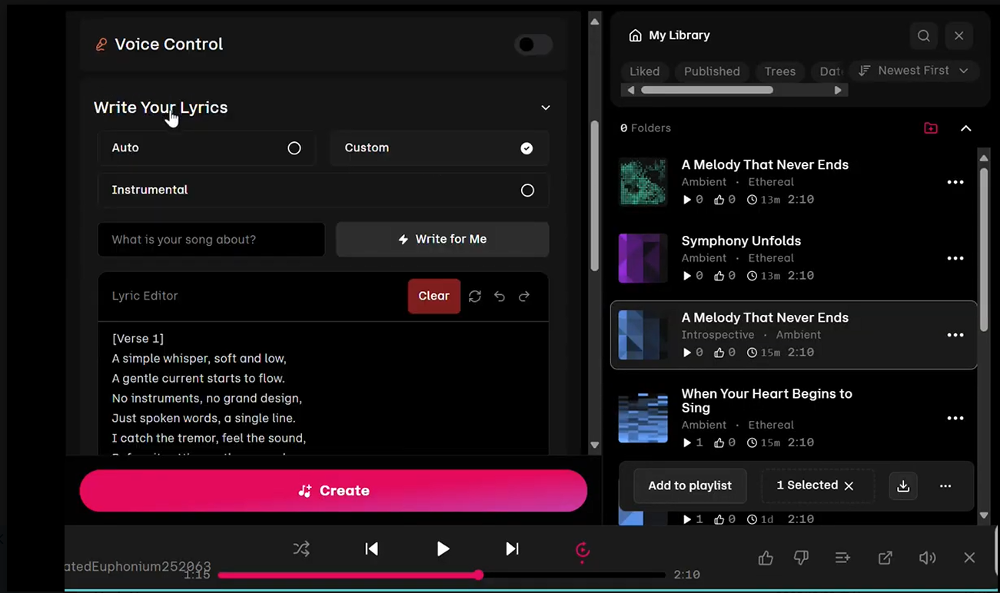
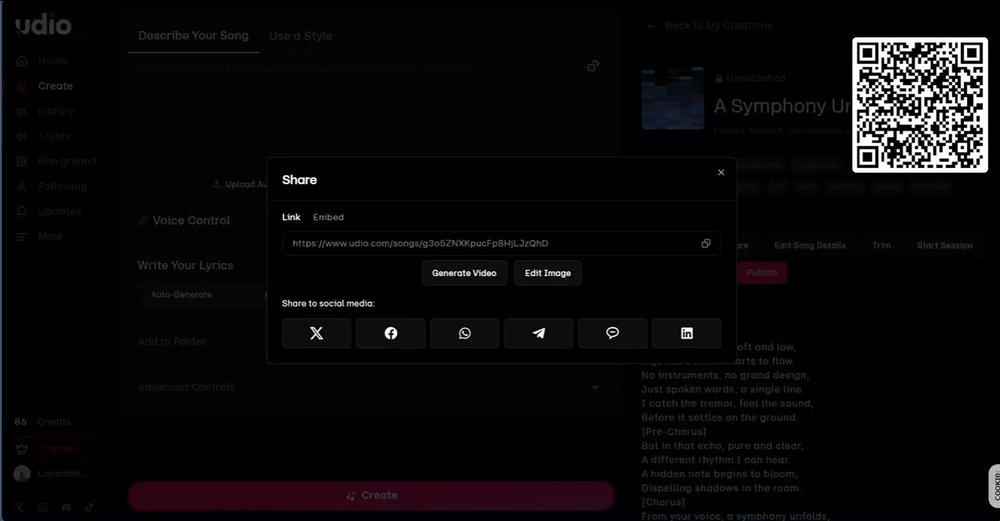

音楽AIプロジェクトの紹介
このプロジェクトは、音声を分析して感情を検出することで、より自然な音楽を作成するAI技術を活用しています。
作成した音楽はダウンロードしていつでも聞くことができます。
1.AIが録音した音声を分析し、感情を検出します(AmiVoice API)

2. 分析した結果をプロンプトに変換します(Gemini API)

3. 検出した感情に基づいて、オリジナルの音楽を作成します(Udio AI)

4. 作成された音楽はダウンロードして聞くことができます。
